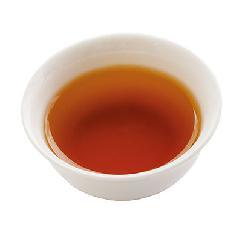
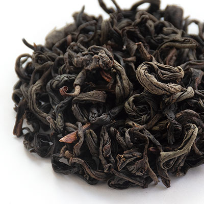

시즈오카홍차 콘도와세 2026
静岡紅茶 近藤早生 2026


親しみやすくコクのある 和紅茶らしい味わい。
熟成した旨みとコク、豊かな香気が調和する王道の味わい。民間育成の希少品種「近藤早生」による和紅茶。
【品種について】
「近藤早生」は、やぶきた系のお茶に、印雑（アッサム）系の花粉が自然交配して誕生したと考えられている、個性的な香気で知られる民間育成種の希少品種。
約40年前に静岡市の近藤宏正氏が発見、現在は丸子（まりこ）地区の2名の生産者のもとでしか生産されていない、大変希少な品種です。
松川洋平氏の「近藤早生」は、緑茶として製茶すると、すっきりした甘みに果実に似た香りが重なる上質な味わいに。紅茶に仕立てると、さらに果実を思わせる心地よい芳香が重なる、軽やかな口当たりの絶品になります。
【丸子（まりこ）について】
静岡駅から安倍川を渡り西に約7km。東海道五十三次の20番目の宿場町（鞠子宿）としても知られる丸子は、山間に囲まれた清流沿いの宿場町。名物のとろろ汁やとろろ芋とともに、江戸時代の滑稽本「東海道中膝栗毛」や松尾芭蕉の作品でも紹介されています。
明治時代に多田元吉氏がインドから持ち帰った紅茶の原木（アッサム種）を静岡市丸子に植えたことに由来し、丸子は国産紅茶発祥の地といわれています。
丸子では明治期に紅茶作りが奨励されたこともあり、多くの外来品種が山中などに残って自生しています。
【松川茶園について】
松川氏の茶園は標高80〜120mの傾斜地にあります。
近藤早生は極早生品種のため、霜の被害を受けやすい部類の品種ですが、松川氏の茶園では急峻な斜面で栽培をしているので、霜の影響を受けにくいというメリットがあります。
また、北向きの茶園のため、収穫量自体は少ないものの、一つ一つの芽が力強く伸び、香味豊かな味わいとなります。
近藤早生の製造特性を把握し、製造方法にもこだわりを持って取り組まれている生産者です。
- 상품번호
- 3425
- 상품 형태
- 30g 봉입
- 가격
- 1,200円
- 판매 안내
- ※기간・수량한정
※상미기한：제조일로부터2년 - 원재료
- 紅茶※商品の改定などにより、商品パッケージの記載内容が上記内容と一部異なる場合がございます。
- 원산지
- 日本・静岡※商品の改定などにより、商品パッケージの記載内容が上記内容と一部異なる場合がございます。
- 찻잎
- 2.5-3g
- 물
- 熱湯
- 우림 시간
- 2-3分
- 우림 횟수
- 1-2回